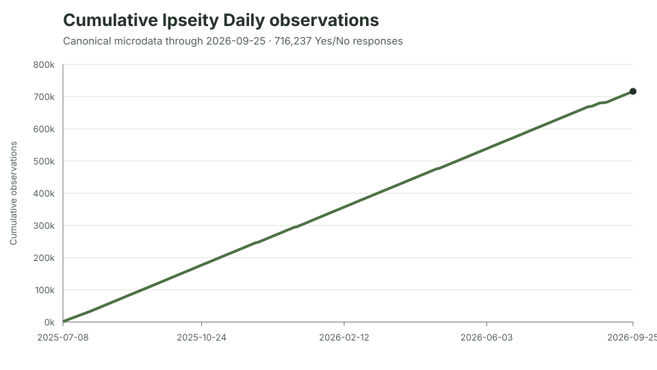
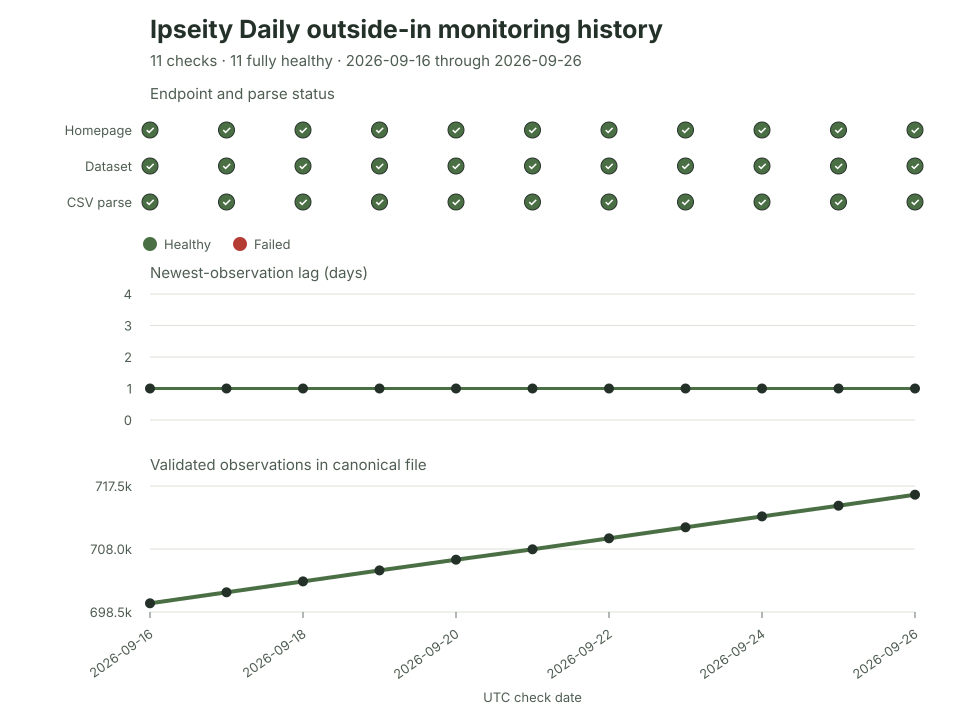
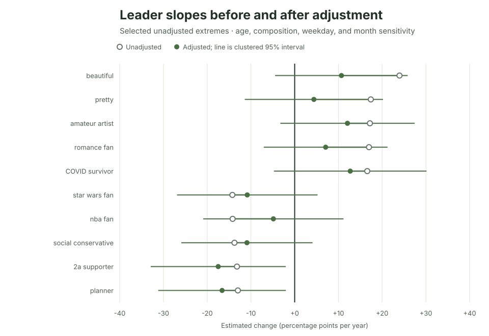
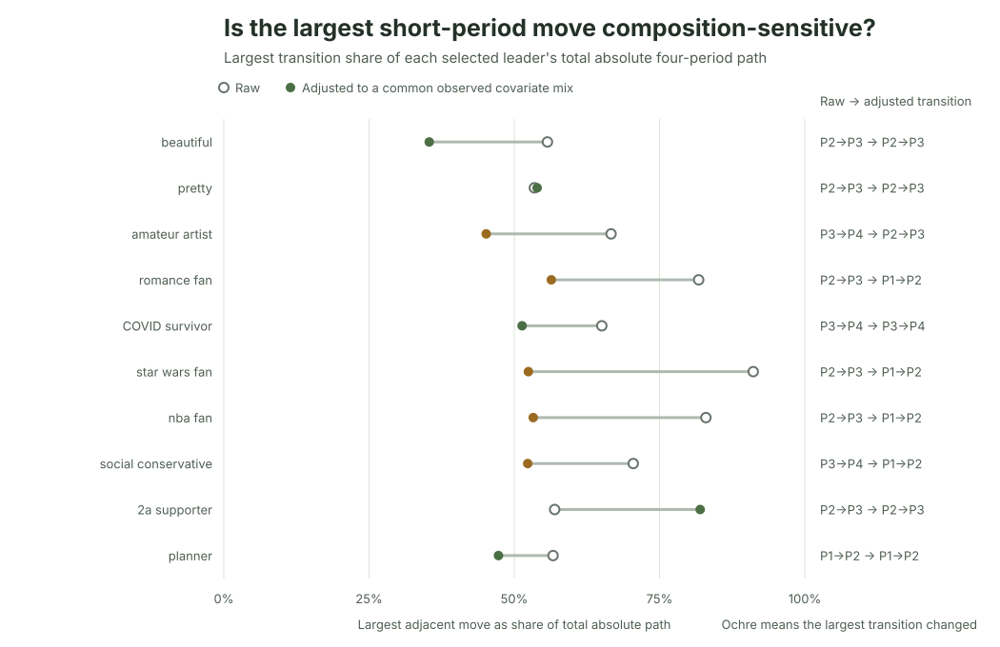

Ipseity Daily Pulse
Outside-in monitoring and descriptive identity-signifier trends
Current pulse
Executive summary · Two-column short report (PDF) · Project blog · Current machine-readable summary
On September 26, 2026, the Ipseity Daily homepage and canonical microdata were reachable. The gzip parsed cleanly with 716,237 Yes/No response observations, 5,059 hashed respondents, 707 signifiers, and observation dates from July 8, 2025 through September 25, 2026. The newest observation was one day behind the check date, and the monitor detected no anomaly.
Across 704 eligible signifiers, the median unweighted annualized prevalence slope was +0.5 percentage points per year; the middle half ranged from -1.9 to +3.0 points. beautiful had the largest positive point estimate (+24.0 points/year) and star wars fan the most negative (-14.2). These are screening leads, not discoveries: none of the 704 tests had a Benjamini–Hochberg q-value or Bonferroni-adjusted p-value at or below .05.

What the pulse measures
Ipseity Daily repeatedly asks sampled American adults whether words, phrases, emoji, and other identity signifiers describe them today. The public microdata make the resulting responses inspectable and reusable (Jones, 2026). This Project observes that system from outside: it checks public delivery, validates the canonical file, and describes patterns in the responses. It does not operate or modify Ipseity Daily.
One row in the canonical response file is one Yes/No answer, not one person. A respondent can appear on multiple dates and can answer multiple signifiers. The current analysis therefore reports response observations, unique hashed respondents, and respondent–signifier clusters separately.
Outside-in monitoring
The monitor checks the public homepage and canonical gzip, validates its schema and binary response domain, rejects duplicate respondent/date/signifier keys, and records a timestamped row in an append-only history. Eleven sampled checks from September 16 through 26 all found a reachable homepage, a retrievable and parseable file, no anomaly, and a one-day newest-observation lag. The canonical file gained 16,402 observations across those checks.


These are eleven snapshots, not continuous telemetry. They do not reveal interruptions between checks or establish an uptime rate.
Descriptive trend screen
For every signifier with at least 300 responses on 30 dates spanning at least 180 days, the analysis fits an unweighted linear probability model:
\[\text{endorsement}_{ij} = \alpha + \beta\,\text{date}_{ij} + \epsilon_{ij}.\]
The coefficient is annualized to percentage points per year. CR1 sandwich uncertainty clusters responses by hashed respondent, following the general repeated-outcome logic of Liang & Zeger (1986). Benjamini–Hochberg q-values (Benjamini & Hochberg, 1995) and Bonferroni-adjusted p-values screen the 704 eligible estimates for multiplicity.
| Signifier | Annual change (pp) | Respondent-clustered 95% interval | BH q | Responses |
|---|---|---|---|---|
| beautiful | +24.0 | [+10.8, +37.1] | 0.117 | 458 |
| pretty | +17.4 | [+3.4, +31.4] | 0.413 | 422 |
| amateur artist | +17.2 | [+5.0, +29.4] | 0.311 | 424 |
| star wars fan | -14.2 | [-27.3, -1.2] | 0.483 | 427 |
| nba fan | -14.2 | [-27.4, -1.0] | 0.500 | 409 |
| social conservative | -13.8 | [-25.5, -2.0] | 0.423 | 432 |
Several nominal clustered intervals exclude zero, but no estimate survives either multiplicity screen. Selecting and describing the extrema makes their point estimates especially susceptible to ranking noise. Claims that these signifiers changed in the U.S. adult population would go far beyond the evidence in this convenience sample.
Robustness diagnostics
The analysis subjects the ten most positive and ten most negative slopes to several targeted diagnostics. These do not create a second discovery procedure; they ask how the selected descriptions change under different samples, covariate adjustments, and time summaries.
| Diagnostic | Current result | What it does not solve |
|---|---|---|
| Composition and calendar adjustment | 20/20 slopes retain direction; median absolute shift 5.3 pp/year | Unobserved composition, weighting, selection of extrema |
| Early-versus-late contrast | 20/20 raw and 19/20 adjusted contrasts retain the slope direction | Short reversals, unobserved composition, causal interpretation |
| Four-period path | 7/20 raw paths move in the selected direction in all three transitions | Boundary sensitivity, inference, population weighting |
| Standardized four-period path | 0/20 align in all three transitions; 11/20 retain the same largest transition | Model form, unbounded linear-probability predictions |
| Repeat-sample pooled slope | 17/20 retain the all-response direction | Selective return, small repeat samples |
| Respondent fixed effect | 12/20 retain the original direction | Time-varying confounding, population generalization |

The four-period diagnostic shows why a single linear slope should not be narrated as steady change. The median largest adjacent move contains 64% of each selected raw path, compared with 52% after standardizing recorded age, composition, weekday, and month. Only 11 of 20 selected signifiers retain the same largest transition after adjustment.

The within-respondent comparison changes the scientific question. Restricting to people who answered a signifier more than once produced a median absolute shift of 11.5 points/year; absorbing stable respondent differences then shifted the estimates by another 16.7 points. The median selected signifier had only 26.5 repeat respondents. A mechanically zero slope when nobody switches endorsement is not evidence of exact population stability.
Interpretation and limitations
The most defensible current findings are operational and methodological:
- At all eleven sampled moments, the public page and canonical data were available and the file passed the implemented checks.
- Most annualized signifier slopes cluster near zero, and neither multiplicity correction identifies a discovery.
- Extreme point estimates are sensitive to who is included, what covariates are held constant, and how time is summarized.
- Pooled response change and within-person change are distinct estimands.
The analysis is unweighted and does not establish representativeness of U.S. adults. Recorded covariates cannot remove unobserved or time-varying composition. Linear probability models are descriptive and can produce adjusted levels outside 0%–100%. Calendar partitions are analytical choices. All leader diagnostics condition on selecting extremes from the same data, and none replaces confirmatory analysis on later observations.
Reproducibility
The public repository contains the standard-library monitor, synthetic unit tests, append-only check history, current aggregate tables, SVG figures, report source, and build instructions. The September 26 canonical gzip was 5,079,260 bytes with SHA-256 0e3558ecb76f84cb33ca1fa878f81cb82159457987bd384edad13c34b2cd2354.
Download the current machine-readable summary, trend table, leader sensitivity, period trajectory, and monitoring history. The canonical data remain available from the Ipseity Daily download page.